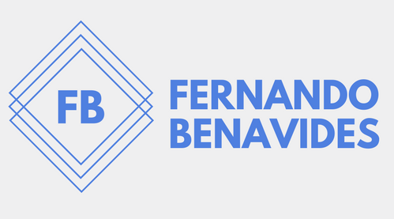

Software Developer in process
Software Developer in process

● Worked with small team building a completed statistical control of thermal profiles for reflow ovens program of validation over 10 weeks.
● Developed a C++ GUI using QT library that extract information from PDF files and represent the content on QCharts and QTables.
● Attend to weekly meetings throughout the whole project.
● Worked with small team developing a dog feeder, a robot that is capable of feeding a pet dog in a configurable periods of time and amount of food.
● Developed in a Arduino board and many modules as LCD, Relay, RTC, I2C.
● Developed a C++ program that runs on the shell terminal where is required a system that can manage the calls that their employees have attended during the day. The user can add employees and customers with their respect properties respectively.
● In this project two ATD were used, the more complex was a Doubly Circular Linked List with Dummy Header and the other was a Circular Linked List.
● The software development process was the Waterfall Model and this project is properly documented.